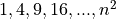
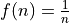

Python#
What I cannot create, I do not understand.
—Richard Feynman
In this lab, you will install Python and learn some of its basic functions. The goal is to get familiar with using Python.
Instructions#
Create a Python
.pyscript namedLASTNAME_FIRSTNAME_project_zero.pyin yourLinux Filesfolder on your file system. You can do this by opening an IDLE session, creating a new file and then saving it. ReplaceLASTNAMEandFIRSTNAMEwith your last and first name, respectively.Create a Python docstring at the very top of the script file. Keep all written answers in this area of the script.
Perform all exercises and answer all questions in the Project section. Label your script with comments as indicated in the instructions of each problem.
When you are done, zip your folder and all its contents in a file named
LASTNAME_FIRSTNAME_project_zero.zipUpload the zip file to the Google Classroom Project Zero assignment.
Background#
Like windmills and Heineken, Python is a product of the Netherlands. It was invented in the 1980s by Guido van Rossum, an engineer at Microsoft. Technically, Python is a language specification, a set of grammatical rules and syntax. Any program that implements this specification is considered “Python”. The actual implementation details vary depending on which Python engine you are running. Popular implementations of Python have been written in Java and C. However, these are details we will never need to know. We are using Python as an already built tool, not studying Python in order to understand how it was built.
Python is a very popular tool. Google python AND data science and you will get a half billion results.
Tip
The upper-case “AND” in the search suggestion is a Google search operator. Learn how to Google effectively and it will save a ton of time!
In the last decade, Python has become the go-to tool for conducting data analysis. There is a reason for this: Python is easy to learn and easy to use. You don’t need any prior programming experience (although a few math classes help!), so you can focus on the problems you are actually solving rather than learning syntax.
Python has excellent documentation. If you are ever in doubt (or just want to know more), try using the search bar on the documentation to find an answer:

In addition, you can refer to the Python section on this web site, where you will find some resources dedicated to the topics in this class.
Project#
Head over to the Python Setup page and prepare your ChromeBook for Python.
Read through the Basics and the Functions pages. Try the examples on your ChromeBook as you read through these pages. Use them as a reference to complete the exercises that follow.
Add the required
importstatements from Imports to the top of your py script.Take the Natural Numbers dataset from the Datasets section and add it to your py script. Perform the following operations. Be sure to add Comments where appriopriate.
Using Slicing and the
natural_numberslist, create a list of all the even numbers between 1 and 100. Save the code in your script and label it with a comment# 4a.Using Slicing and the
natural numberslist, create a list of all the odd numbers between 1 and 100. Save the code in your script and label it with a comment# 4b.Using Comprehension and the
natural numberslist, a create a list of the first 100 squares. Recall a sequence of n square numbers is given by . Save the code in your script and lavel it with a comment# 4c.Using Comprehension and the
natural numberslist, a create a list that represents the first 100 values of the function , wherenmust be a natural number.
Take the Random Numbers dataset from the Datasets section and add it to your py script. Perform the following operations. Be sure to add Comments where appropriate,
Using Slicing, break this list into two even lists of 5000 random numbers each. Save the code in your script and label it with a comment
# 5a.Using Built-In Functions, calculate the sum of each of the lists you found in part a. Save the code in your script and label it with a comment
# 5b. Before executing your code, answer the following questions and include each answer in the docstring.How do you expect the sums to be compare? Will they be equal or unequal? Will be they be close together or far apart? Why? Justify your answer.
Calculate the difference between both sums, i.e. if
nis the variable that contains the sum of your first list andmis the variable that contains the sum of your second list, find the value ofn - m. Should this value be positive, negative or zero?Re-execute your code. Did you do it? Go ahead and do it again, just to be safe. Alright, are you done? Do it one more time, but this time do it with feeling. Do you get the same results each time? How do the results compare? Explain.
If you performed this experiment a 100 times, what do you expect the difference of the sum of these lists to be on average?
Now it’s your turn to generate some data. Using the Random Choice Function and the techniques studied so far, generate a list of data that represents the experiment of asking 100 randomly selected people whether they prefer Mayor McCheese, The Hamburglar, Grimace or Ronald McDonald as McDonald’s mascot. Save the code in your script and lavel it with a comment
# 6a.
Imports#
To complete this lab, you will need to import the random package. Add the following line to the top of your py script underneath your docstring,
import random
Datasets#
Natural Numbers#
Copy and paste the following list variable into your py script to generate the natural numbers 1 to 100,
natural_numbers = [ x for x in range(100) ]
Random Numbers#
Copy and paste the following list variable into your py script to generate 10000 random numbers.
random_numbers = [ random.random() for _ in range(10000) ]